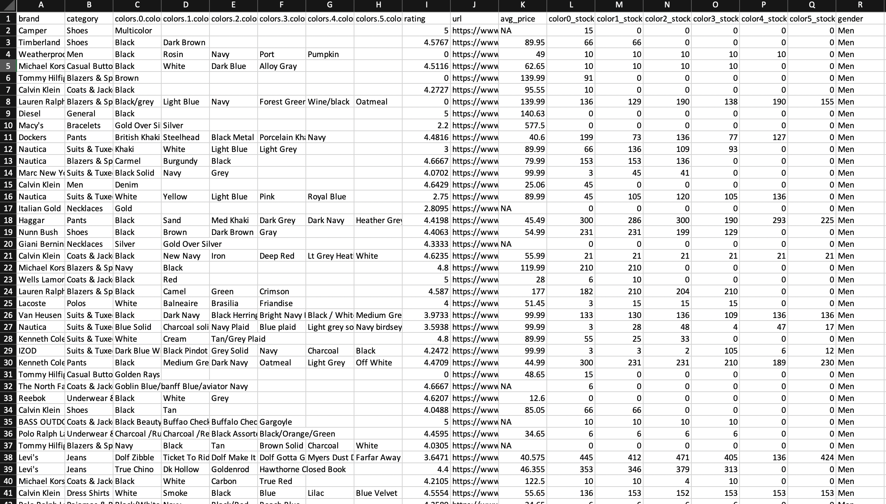
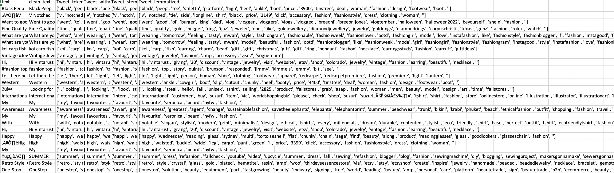

Data cleaning (also known as data cleansing or data wrangling) is a critical first step in the data analytics process. This critical exercise, which involves preparing and validating data, is usually performed prior to your main analysis. Data cleaning is more than just removing erroneous data, though that is often a component of it. The majority of the time is spent detecting erroneous data and (where possible) correcting it. Rogue data includes information that is incomplete, inaccurate, irrelevant, corrupt, or incorrectly formatted. Deduplication, or deduping, is also a part of the process. This essentially means merging or removing data points that are identical.Since data analysis is commonly used to inform business decisions, results need to be accurate. In this case, it might seem safer simply to remove rogue or incomplete data. But this poses problems, too: an incomplete dataset will also impact the results of your analysis. Thats why one of the main aims of data cleaning is to keep as much of a dataset intact as possible. This helps improve the reliability of your insights. Data cleaning is not only important for data analysis. Its also important for general business housekeeping (or data governance). The sources of big data are dynamic and constantly changing. Regularly maintaining databases, therefore, helps you keep on top of things.

A common refrain youll hear in the world of data analytics is: garbage in, garbage out. This maxim, so often used by data analysts, even has its own acronym… GIGO. But what does it mean? Essentially, GIGO means that if the quality of your data is sub-par, then the results of any analysis using those data will also be flawed. Even if you follow every other step of the data analytics process to the letter, if your data is a mess, it wont make a difference. For this reason, the importance of properly cleaning data cant be overstated. Its like creating a foundation for a building: do it right and you can build something strong and long-lasting. Do it wrong, and your building will soon collapse. This mindset is why good data analysts will spend anywhere from 60-80% of their time carrying out data cleaning activities. Beyond data analytics, good data hygiene has several other benefits.
There are several steps involved in the data cleaning process. These steps are not always carried out in the same order, and they may be repeated several times.
The steps are as follows:
For Record Data:
Step 1: Remove duplicate or irrelevant observations Remove unwanted observations from your dataset, including duplicate observations or irrelevant observations. Duplicate observations will happen most often during data collection. When you combine data sets from multiple places, scrape data, or receive data from clients or multiple departments, there are opportunities to create duplicate data. De-duplication is one of the largest areas to be considered in this process. Irrelevant observations are when you notice observations that do not fit into the specific problem you are trying to analyze. For example, if you want to analyze data regarding millennial customers, but your dataset includes older generations, you might remove those irrelevant observations. This can make analysis more efficient and minimize distraction from your primary target as well as creating a more manageable and more performant dataset.
Step 2: Fix structural errors Structural errors are when you measure or transfer data and notice strange naming conventions, typos, or incorrect capitalization. These inconsistencies can cause mislabeled categories or classes. For example, you may find N/A and Not Applicable both appear, but they should be analyzed as the same category.
Step 3: Filter unwanted outliers Often, there will be one-off observations where, at a glance, they do not appear to fit within the data you are analyzing. If you have a legitimate reason to remove an outlier, like improper data-entry, doing so will help the performance of the data you are working with. However, sometimes it is the appearance of an outlier that will prove a theory you are working on. Remember: just because an outlier exists, doesnt mean it is incorrect. This step is needed to determine the validity of that number. If an outlier proves to be irrelevant for analysis or is a mistake, consider removing it.Step 4: Handle missing data You cant ignore missing data because many algorithms will not accept missing values. There are a couple of ways to deal with missing data. Neither is optimal, but both can be considered. As a first option, you can drop observations that have missing values, but doing this will drop or lose information, so be mindful of this before you remove it. As a second option, you can input missing values based on other observations; again, there is an opportunity to lose integrity of the data because you may be operating from assumptions and not actual observations. As a third option, you might alter the way the data is used to effectively navigate null values.
Step 5: Validate and QA At the end of the data cleaning process, you should be able to answer these questions as a part of basic validation: Does the data make sense? Does the data follow the appropriate rules for its field? Does it prove or disprove your working theory, or bring any insight to light? Can you find trends in the data to help you form your next theory? If not, is that because of a data quality issue? False conclusions because of incorrect or dirty data can inform poor business strategy and decision-making. False conclusions can lead to an embarrassing moment in a reporting meeting when you realize your data doesnt stand up to scrutiny. Before you get there, it is important to create a culture of quality data in your organization.
Data obtained from twitter usually contains a lot of HTML entities like < > & which gets embedded in the original data. It is thus necessary to get rid of these entities. One approach is to directly remove them by the use of specific regular expressions. Hare, we are using the HTML parser module of Python which can convert these entities to standard HTML tags. After this, we are removing this special HTML Character and links. In decoding data, this is the process of transforming information from complex symbols to simple and easier to understand characters. The collected data uses different forms of decoding like “Latin”, “UTF8” etc. In the twitter datasets, there is also other information as retweet, Hashtag, Username and modified tweets. All of this is ignored and removed from the dataset.
Stop words are generally thought to be a single set of words. We would not want these words taking up space in our database. For this using NLTK and using a Stop Word Dictionary. The stop words are removed as they are not useful.All the punctuation marks according to the priorities should be dealt with. In the twitter datasets, there is also other information as retweet, Hashtag, Username and Modified tweets. All of this is ignored and removed from the dataset. We should remove these duplicates, which we already did. Sometimes it is better to remove duplicate data based on a set of unique identifiers.

| Snippet of Dataset | Description |
|---|---|
| 
|
|
| 
|
|